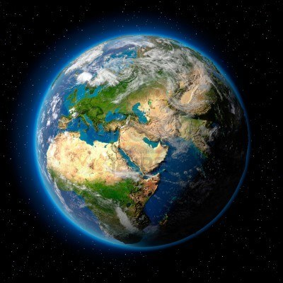
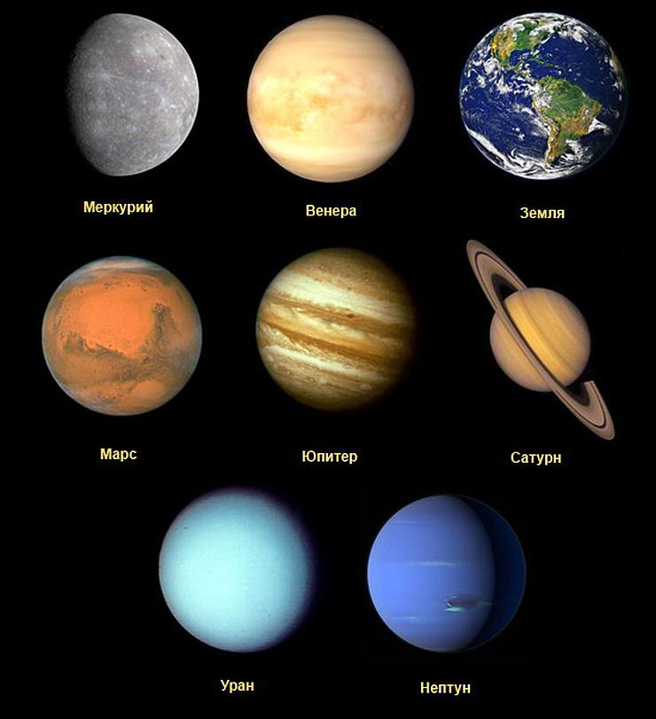
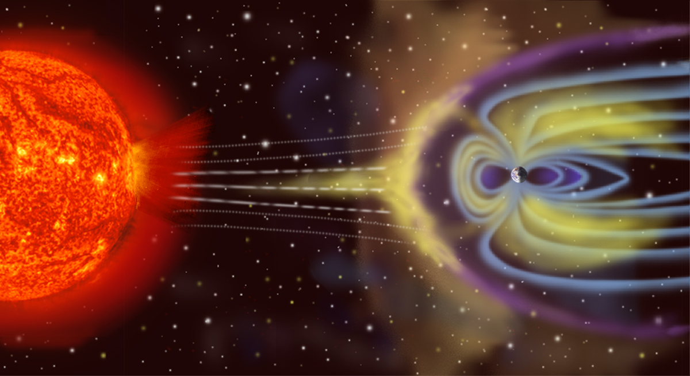

Земля
Земля́ — третья по удалённости от Солнца планета Солнечной системы. Самая плотная, пятая по диаметру и массе среди всех планет и крупнейшая среди планет земной группы, в которую входят также Меркурий, Венера и Марс.
Иногда упоминается как Мир, Голубая планета, иногда Терра (от лат. Terra). Единственное известное человеку на данный момент тело Солнечной системы в частности и Вселенной вообще, населённое живыми организмами.
Научные данные указывают на то, что Земля образовалась из солнечной туманности около 4,54 миллиарда лет назад и вскоре после этого приобрела свой единственный естественный спутник — Луну. Предположительно жизнь появилась на Земле примерно 4,25 млрд лет назад, то есть вскоре после её возникновения. С тех пор биосфера Земли значительно изменила атмосферу и прочие абиотические факторы, обусловив количественный рост аэробных организмов, а также формирование озонового слоя, который вместе с магнитным полем Земли ослабляет вредную для жизни солнечную радиацию, тем самым сохраняя условия существования жизни на Земле. Радиация, обусловленная самой земной корой, со времён её образования значительно снизилась благодаря постепенному распаду радионуклидов в ней. Кора Земли разделена на несколько сегментов, или тектонических плит, которые движутся по поверхности со скоростями порядка нескольких сантиметров в год. Изучением состава, строения и закономерностей развития Земли занимается наука геология.
